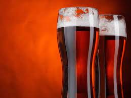

Beer Description
American amber spans a wide range of characteristics. The color ranges from amber to coppery brown, the hop aroma from low to moderate, and the hop flavor from moderate to high. This is often a beer with a very clean fermentation profile, though some examples will have up to a modest amount of fruity esters. The body is medium to medium-full. The alcohol is usually restrained, but can be fairly substantial and slightly warming.
Ingredients
- 9.5 lb. (4.3 kg) Great Western 2-row malt (2 °L) (or light, North American 2-row)
- 0.75 lb. (340 g) Great Western crystal malt (40 °L)
- 0.5 lb. (227 g) Durst Munich malt (8 °L)
- 0.25 lb. (113 g) Great Western crystal malt (120 °L)
- 6.5 AAU Horizon hops, (60 min)
- 1.5 AAU Cascade hops, (10 min)
- 2.25 AAU Centennial hops, (10 min)
- 1.5 AAU Cascade hops, (0 min)
- 2.25 AAU Centennial hops, (0 min)
- Wyeast 1056 (American Ale) yeast
Step by step
- Mill the grains and dough-in targeting a mash of around 1.5 quarts of water to 1 pound of grain (a liquor-to-grist ratio of about 3:1 by weight) and a temperature of 154 °F (68 °C). Hold the mash at 154 °F (68 °C) until enzymatic conversion is complete. Infuse the mash with near boiling water while stirring or with a recirculating mash system raise the temperature to mash out at 168 °F (76 °C). Sparge slowly with 170 °F (77 °C) water, collecting wort until the pre-boil kettle volume is around 6.5 gallons (25 L) and the gravity is 1.040 (9.9°P).
- Total wort boil time is 90 minutes. Add the bittering hops with 60 minutes remaining in the boil. Add Irish moss or other kettle finings with 15 minutes left. Add other hop additions at 10 minutes remaining and flame out. Chill the wort to 67 °F (19 °C) and aerate thoroughly. The proper pitch rate is 9 grams of rehydrated dry yeast, 2 packages of liquid yeast or 1 package of liquid yeast in a 1.5-liter starter.
- Ferment at 67 °F (19 °C) until the yeast drops clear. Fermentation should be complete in about one week. Allow the lees to settle and the brew to mature without pressure for another two days after fermentation appears finished. Rack to a keg and force carbonate or rack to a bottling bucket, add priming sugar, and bottle. Target a carbonation level of 2 to 2.5 volumes.